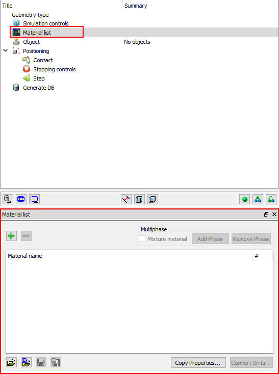
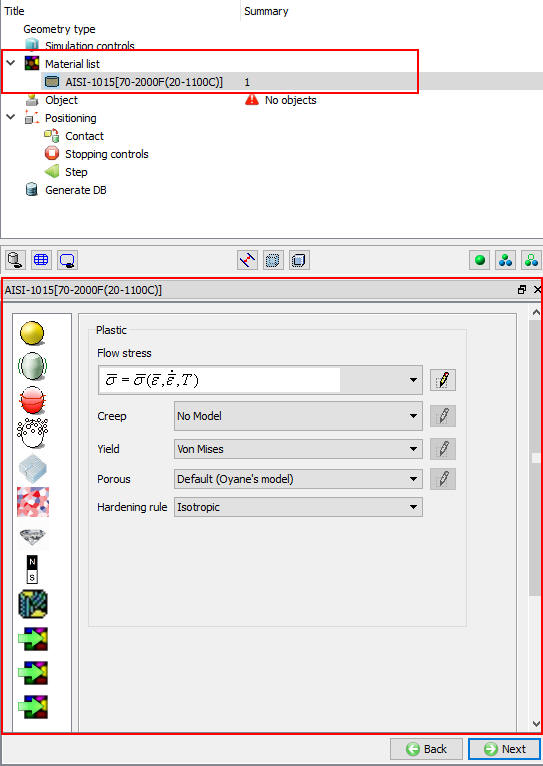
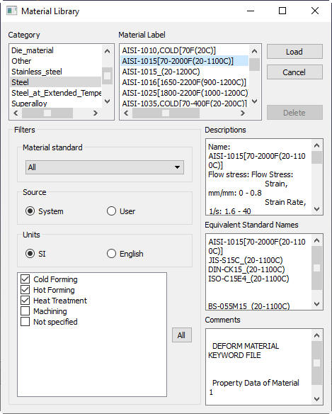
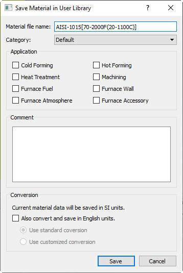
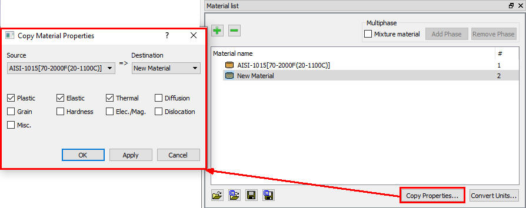
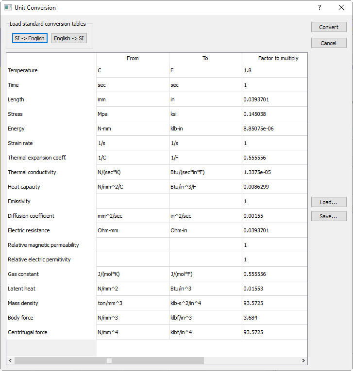
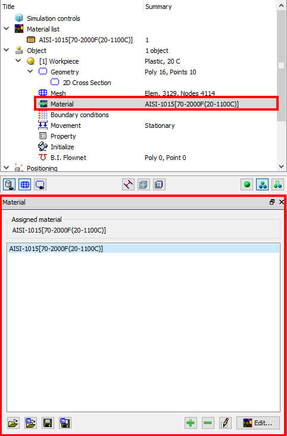
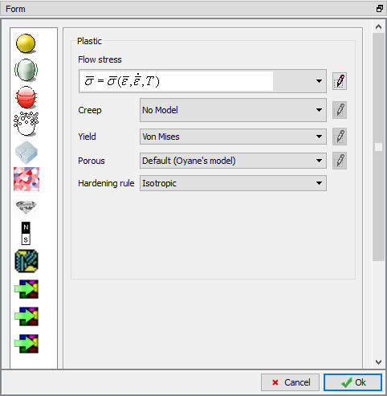

The material properties window can be accessed by clicking the material list (See Fig. 10.1.).

Material list page in Operation tree
The material properties dialog is shown in Fig. 10.2. In order for a simulation to achieve a high level of accuracy it is important to have an understanding of the material properties required to specify a material used in DEFORM. The properties required are dependent on the physical effects being simulated in DEFORM. The material properties that the user is required to specify is a function of the material types that the user is utilizing in the simulation. This section describes the material data that may be specified for a DEFORM simulation.

Material Properties page
The different data sets are:
This chapter discusses the manner in which to define each data set, and for which type of simulation each of these is required.
The DEFORM material library contains several hundred data sets. Nearly all materials contain Plastic (flow stress), elastic and thermal data. Depending on the intended application, the material data may also include microstructure related data.
The user should confirm that the material selected from the library is appropriate for the process they intend to model.
Phases and mixtures (MSTMTR) [MIC]
Material groups can be classified into two categories, Regular and Mixture. “Regular” materials are appropriate for modeling most metal processing operations, including
most forming, cutting, or stress analysis problems. “Mixture” materials (MSTMTR) are used when a phase transformation is to be modeled in the simulation. The transforming material is modeled
as a “mixture” of its constituent phases. For example, carbon steel might be modeled as a mixture of Austenite, Pearlite, Bainite, and Martensite. If a mixture material is defined, transformation rules should be defined which govern the transformation
of one phase into another.
Multiphase: To add multiple Phases we need check the Mixture material check as shown in Below Fig. 10.3. Using option we can add new phases and using option we can remove the added phases to the material.
Adding Phase for Mixture material
Create a New Material  is used to define new material, after selecting this button new material adds into the Material list. By left mouse button double
click in material list material name can be renamed and its properties must be defined in the respective tabs (Described in the further sections like Plastic data, Elastic data, etc.).
is used to define new material, after selecting this button new material adds into the Material list. By left mouse button double
click in material list material name can be renamed and its properties must be defined in the respective tabs (Described in the further sections like Plastic data, Elastic data, etc.).
Delete Current Material  will delete the current material selected in the material list.
will delete the current material selected in the material list.
Import Material from a file  is used to import the material data from the DB or Key file into the problem
setup.
is used to import the material data from the DB or Key file into the problem
setup.
Load Material from library  using this user can load material from DEFORM material database. (See Fig. 10.4.)
Based upon the application user can select cold forming, hot forming, Heat treatment and Machining operations check boxes. Also other filters like material standard, unit system and user/system library will make the selection of material easier.
using this user can load material from DEFORM material database. (See Fig. 10.4.)
Based upon the application user can select cold forming, hot forming, Heat treatment and Machining operations check boxes. Also other filters like material standard, unit system and user/system library will make the selection of material easier.

Load material from library window
Save Material data to a file  is used to save the material data from DEFORM problem setup in key file format. This material data can be used by
importing back into the other problem setups.
is used to save the material data from DEFORM problem setup in key file format. This material data can be used by
importing back into the other problem setups.
Save Material data to library  is used save the user defined material into the deform user library. While saving in the user needs to save under
the some category and can also give the application based filters and the comments (see Fig. 10.5.).
is used save the user defined material into the deform user library. While saving in the user needs to save under
the some category and can also give the application based filters and the comments (see Fig. 10.5.).

Save Material in User Material library window
Copy Properties  is used to copy the regular material properties like plastic, elastic, thermal etc. from one material to other while creating/defining the material
data. (See Fig. 10.6.) In this dialog source and destination for copying the properties and which properties to be copied must be selected.
is used to copy the regular material properties like plastic, elastic, thermal etc. from one material to other while creating/defining the material
data. (See Fig. 10.6.) In this dialog source and destination for copying the properties and which properties to be copied must be selected.

Convert Units  is used to convert the current selected material from material list from SI to English or English to SI or user can use any other multiplication
factor. (See Fig. 10.7.) Selecting the
is used to convert the current selected material from material list from SI to English or English to SI or user can use any other multiplication
factor. (See Fig. 10.7.) Selecting the  button will display the multiplication
factors for converting from SI to English, similarly for
button will display the multiplication
factors for converting from SI to English, similarly for  , selecting the
, selecting the  button will convert and close the
conversion window. This conversion table can be saved using button and can also edited by using wordpad/notepad and loaded back UNITCONV.DAT file using button.
button will convert and close the
conversion window. This conversion table can be saved using button and can also edited by using wordpad/notepad and loaded back UNITCONV.DAT file using button.

Material Unit converter window
Material Assigning for object
Below Fig. 10.8. shows the material window. User can assign required material from the list or can import and save from file or library. User can also add new material, even edit and delete the material in list from object material window.

Once after adding material click on  button, material window will open as shown in Fig. 10.9.
button, material window will open as shown in Fig. 10.9.

Edit material window
Related Topics:
10.4. Diffusion Data Definition
10.5. Dislocation Data Definition
10.7. Hardness Data Definition
10.8. Elec/ Mag Data Definition
10.9 Transformation Data Definition
10.10. Coarsening Data Definition
10.11. Texture Data Definition
10.12. Miscellaneous Data Definition